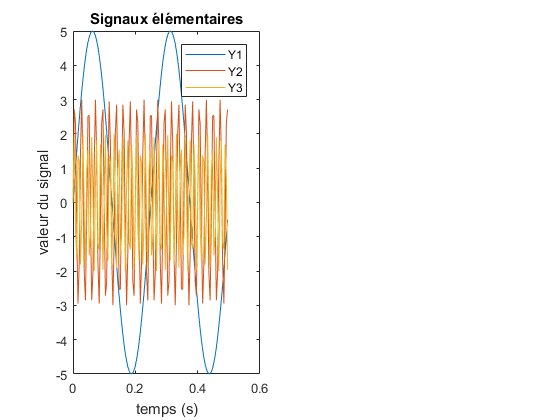
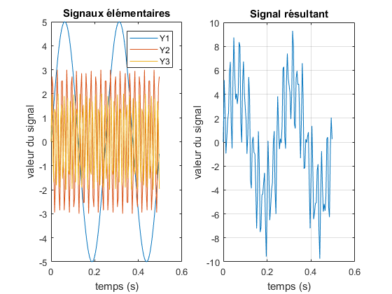
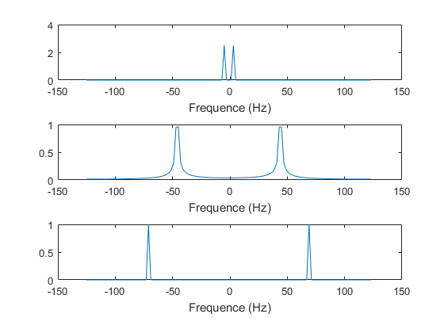
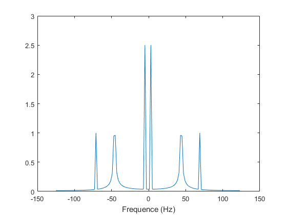

Exercice 3 : Analyse spectrale
Contents
Question 1
Définition du domaine temporel :
T = 0:(1/250):0.5-(1/250);
Définition des signaux élémentaires :
% Y1 Y1 = 5 * sin(2 * pi * 4 * T); % Y2 Y2 = 3 * sin(2 * pi * 45 * T); % Y3 Y3 = 2 * sin(2 * pi * 70 * T);
Affichage des signaux élémentaires :
figure; subplot(1,2,1); plot(T, Y1, T, Y2, T, Y3); title("Signaux élémentaires"); legend("Y1", "Y2", "Y3"); xlabel("temps (s)"); ylabel("valeur du signal");
Question 2
Période du signal Y1. Période théorique = 0.25s :
T1 = 0.5 / 2
T1 =
0.2500
Période du signal Y2. Période théorique = 1/45 = 0.222...s :
T2 = 0.5 / 22.5
T2 =
0.0222
Période du signal Y2. Période théorique = 1/70 = 0.01429...s :
T3 = 0.5 / 35
T3 =
0.0143
Question 3
Définition du signal résultant :
Z = Y1 + Y2 + Y3;
Affichage du signal résultant :
subplot(1,2,2); plot(T, Z); title("Signal résultant"); xlabel("temps (s)"); ylabel("valeur du signal"); grid on;
Période empirique du signal :
TZ = 1.561 - 0.5609
TZ =
1.0001
Période théorique du signal :
TZ_th = gcd(4, gcd(45, 70))
TZ_th =
1
Question 4
Transformée de Fourier discrète de chaque signal
tf1 = fft(Y1); tf2 = fft(Y2); tf3 = fft(Y3); Fe = 250; N = size(T,2); dt=1/Fe; dF = Fe/N; f = -Fe/2:dF:Fe/2-dF; figure(6) subplot(3,1,1) plot(f,abs(fftshift(tf1))/N); xlabel("Frequence (Hz)") subplot(3,1,2) plot(f,abs(fftshift(tf2))/N); xlabel("Frequence (Hz)") subplot(3,1,3) plot(f,abs(fftshift(tf3))/N); xlabel("Frequence (Hz)")
On remarque que le spectre de chaque signal présente un unique pic en la fréquence directement lisible dans sa formule.
Question 5
Transformee de Fourier discrete du signal composite
tf = fft(Y1 + Y2 + Y3);
figure(7)
plot(f,abs(fftshift(tf))/N);
xlabel("Frequence (Hz)")
 On constate que le spectre du signal composite est composé des fréquences de chaque signal présent dans la somme. On n'a pas un Dirac parfait pour la fréquence correspondant à Y2 (le pic est "decapite") car la fréquence d'echantillonnage de 250Hz, bien que suffisante pour reconstituer le signal (Shannon), ne permet pas d'afficher l'amplitude de 1,5.